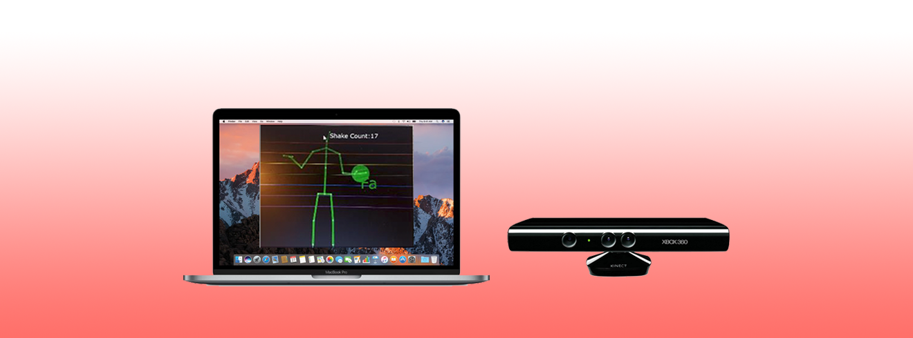

-

BoMix
Interact with music by your body
-

BoMix
One person can be a band
Spring 2017
2 months
I am the user researcher and UI designer for this project. I constructed the user study to show people's preference when they are using their body to represent music play. I want to use better form of both interaction rule and information feedback to provide more natural user experience for BoMix's users.
When users move their legs in the air, BoMix will play drum notes based on users' rhythm.
The mapping rules between different body parts and different types of instruments, different midair areas and different music notes can be customized basaed on users' personal preferences and needs.
Video Demo (Original UI)
• Divide different horizontal gesture areas and different colors for different notes.
Video Demo (Improved UI)
Video Demo (Improved UI)
Video Demo (Improved UI)
We are all students from Tsinghua University, and I am the only undergraduate.
Jason XU | Zetai WANG | Rong ZHANG | Pierre-Louise SCHNITZLER | Xiaofei ZHOU